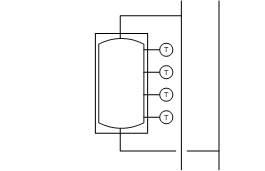

[CGen21] Refrigeration generation, 1 chiller with external compressor control (on/off command, setpoint, feedback, common fault), chilled water storage tank
Plant example CGen21 has a chiller with external cooling group control, compressor control and a chilled water storage tank.
Functions
- Collects cooling requests
- Charges storage tank
- Controls chiller
Plant diagram

Components
- Chilled water storage tank with four sensors
- Interface to external cooling group control
- Hydraulics for evaporator group
- Hydraulics for condenser group
- Recooling command
Components and functions
Components and functions of the plant example:
Component | Function | BACnet object |
|---|---|---|
Gas | Gas detector Switches the plant off. | [BI] Gas detector |
| Fire detection contact Switches the plant off. | [BI] Fire detection contact |
| Operating mode switch Switches the plant to: Auto | Off | On | [MI] Operating mode switch |
| Manual operating mode selection Switches the plant to: Auto | Off | On | [MCnfVal] Manual operating mode selection |
| Present operating mode Reports the present operating mode: Off | On | [MCalcVal] Present operating mode |
| Reason for present operating mode Reports the reason for the present operating mode: Exception | Operating mode switch | Manual operating mode selection | Cooling request | Request from chilled water storage tank | [MCalcVal] Reason for present operating mode |
Cooling request Acquires cooling demand. The plant switches on if one or more cooling requests are pending and the chilled water storage tank is discharged. The plant switches off only after the chilled water storage tank is charged. | ||
Setpoints Cooling generation has an adjustable setpoint for chilled water temperature in the chilled water storage tank. External cooling group control in the chiller controls the outlet temperature on the evaporator to a setpoint reduced by the delta setpoint for chilled water temperature. | [ACnfVal] Chilled water temperature setpoint [ACnfVal] Chilled water temperature delta setpoint |


Chiller
Component | Function | BACnet object |
|---|---|---|
| Chiller Includes evaporator hydraulics, interface to external compressor control and condenser hydraulics. |
|
| Condenser Controls condenser hydraulics. |
|
Outlet temperature on the condenser Measures the outlet temperature. | [AI] Outlet temperature | |
| Inlet temperature on the condenser Measures the inlet temperature. | [AI] Inlet temperature |
Setpoint for minimum inlet temperature to the condenser Specifies the minimum inlet temperature. | [ACnfVal] Min. inlet temperature setpoint | |
| Pump |
|
Command Switches on/off the pump as needed. | > [BO] Command | |
Fault message Reports faults. Switches the plant off. | > [BI] Fault | |
Feedback message Monitors feedback and switches off the plant. | > [BI] Feedback | |
Mixing valve At the inlet, it mixes the required amount of water from the outlet to achieve the desired inlet temperature. |
| |
Temperature controller Controls the inlet temperature. | > [Controller] Temperature controller | |
Positioning 0% = Bypass … 100% = Through-port | > [AO] Position | |
| Request to recooling Binary request to recooling | > [BO] Recooling command (Located in |
| Interface to external cooling group control |
|
Release Release for external control | > [BO] Command | |
Setpoint for the outlet temperature at the condenser Transfers a temperature setpoint to external control. | > [AO] Temperature setpoint | |
Fault message Reports faults. Switches the plant off. | > [BI] Fault | |
Feedback, binary Counts the operating hours. | > [BI] Feedback | |
| Evaporator Controls evaporator hydraulics. |
|
| Flow monitoring on evaporator Monitors flow on the evaporator. Switches the plant off. | [AI] Flow detector |
| Outlet temperature on evaporator Measures the outlet temperature. | [AI] Outlet temperature |
| Inlet temperature on evaporator Measures the inlet temperature. | [AI] Inlet temperature |
Pump |
| |
Command Switches on/off the pump as needed. | > [BO] Command | |
Fault message Reports faults. Switches the plant off. | > [BI] Fault | |
Feedback message Monitors feedback and switches off the plant. | > [BI] Feedback | |
| Mixing valve At the inlet, it mixes the required amount of water from the outlet to achieve the desired chilled water temperature setpoint at the outlet. |
|
Temperature controller Controls the outlet temperature. | > [Controller] Temperature controller | |
Positioning 0% = Bypass … 100% = Through-port | > [AO] Position |
 Chiller (Folder)
Chiller (Folder)


Chilled water storage tank
Component | Function | BACnet object |
|---|---|---|
 | Chilled water storage tank Chilled water storage tank with four sensors and charging logic. Temperature (1) is the highest and temperature (4) the lowest temperature measurement. Charge: The storage tank is discharged and charging is required if temperature (3) is above the chilled water temperature setpoint. Charged: The storage tank is charged if temperature (1) has a switching difference, e.g. 1K, below the chilled water temperature setpoint. |
[ACalcVal] Present temperature setpoint [AI] Temperature (1) [AI] Temperature (2) [AI] Temperature (3) [AI] Temperature (4) |
Functions and diagrams
Chiller with external control of the compressor, hydraulics for the evaporator and condenser group
Operating modes: Off, on
Components, sequence, and function in [CMDSEQ_B] Command sequence for binary
Plant operating mode | Component | ||
|---|---|---|---|
|
| Cds | Evp | RfCrtExtCtl |
Off | Off | Off | Off |
On | On | On | On |
| |||
Sequences |
| ||
Start sequence | 1 | 2 | 3 |
Start function | Delay | Delay | AND (Group with next aggregate) |
Start delay | 30 s | 30 s | - |
| |||
Stop sequence | 3 | 2 | 1 |
Stop function | AND (Group with next aggregate) | Delay | Delay |
Stop delay | - | 30 s | 30 s |
Start sequence
- The hydraulics for the condenser group switch on with a delay of 30 seconds (function Delay).
- The hydraulics for the evaporator group switch on with a delay of 30 seconds (function Delay).
- External cooling group control switches on.
Stop sequence
- External cooling group control switches off with a delay of 30 seconds (function Delay).
- The hydraulics for the evaporator group switch off with a delay of 30 seconds (function Delay).
- The hydraulics for the condenser group switch off.
Controller
Name | Description | Object type | Default value |
|---|---|---|---|
Ch'Evp'Vlv'TCtr | Temperature controller for chiller, evaporator, valve Controls the evaporator outlet temperature. | Controller | N/A |
The temperature controller acts as a PI controller and compares the temperature setpoint chiller [SpTChw] against the outlet temperature on evaporator ['Evp'T] and calculates the modulating control for valve position [Ch'Evp'Vlv'Pos]. The following controller variables are preset: | |||
Ch'Cds'Vlv'TCtr | Temperature controller for chiller, evaporator, valve Controls the condenser inlet temperature. | Controller | N/A |
The temperature controller acts as a PI controller and compares the minimum inlet temperature setpoint on the condenser [Ch'Cds'SpTInMin] against the inlet temperature on the condenser [Ch'Cds'TIn] and calculates the modulating control for valve position [Ch'Evp'Vlv'Pos]. The following controller variables are preset: | |||
Plant operating modes and control sequence
Plant operating modes:
- Off (1)
- On (2)
The operating modes are reported on [MCalcVal] object 'Present operating mode'.
At the same time, the reason for the present operating mode is reported to another [MCalcVal] object:
- Exception (1)
- Operating mode switch (2), resulting from an active (not equal to Auto) operating mode switch
- Operating mode (3), resulting from an active (not equal to Auto) manual operating mode selection
- Cooling request (4)
- Request from chilled water storage tank (5)
There is a normal mode and exception mode.
Normal mode
Sources for normal mode:
- [MI] Operating mode switch
- [MCnfVal] Manual operating mode selection
- [CReq (1)] Cooling demand
- Request from chilled water storage tank
In normal mode, in operating mode 'On', the chiller switches on with function block [CMDSEQ_B] Command sequence for binary.
Exception mode
Sources for exception mode:
- Fire detection contact
- Gas detector
- Chiller faults:
- Fault on or missing feedback from the evaporator pump
- No flow in evaporator circuit
- Fault to external cooling group control
- Fault on or missing feedback from the condenser pump
In exception mode, all outputs are switched off directly at priority 5 and the present operating mode is set to 'Off'.
It is reported at input [RpdOff] for CMDSEQ_B on the chiller.
Start-up control and alarm handling
Start-up control (nested chart SttUpAlmHdl)
The following functionality is available for an automatic startup of the plant, e.g. after a loss of power and return of power:
- Fixed switch-on delay (can be set on input pin [DlySttUp])
- The plant remains off to ensure communications are reliable and cross-check references are triggered. 'Exception' is reported as the reason for the present operating mode.
- Automatic acknowledge (2x) of possible pending alarms during a fixed switch-on delay.
- Additional adjustable delay for staged plant ramp-up (can be set on input pin [DlyOn])
Alarm handling (nested chart SttUpAlmHdl)
The state of events on the plant is acquired by BACnet object 'Plant state'. The state is mapped on function block [CMN_EVT] Common event.
The following functions are available:
- Automatic acknowledge (2x) after startup
- Alarm acknowledgement with a value object
- Alarm indication:
- For pending alarms On
- For unprocessed alarms flashing - Ability to connect the acknowledge button [BI]
- Ability to connect to an alarm indication [BO], e.g. an alarm lamp through an output block [BO]
- Ability to connect to other alarm handling functions on other plants, e.g. acknowledge button and alarm indication for multiple plants in the same control cabinet
I/O data points
Name | Description | Type | Signal/connection | State text | Engineering unit |
|---|---|---|---|---|---|
FireDetCont | Fire detection contact Alarm function: Extended (Notification class 7) Reference value: Tripped Time deviation: 0 [s] | BI | Contact NC | Normal | Tripped | N/A |
GasDet | Gas detector Alarm function: Extended (Notification class 7) Reference value: Tripped Time deviation: 0 [s] | BI | Contact NC | Normal | Tripped | N/A |
OpModSwi | Operating mode switch | MI | N/A | Auto | Off | On | N/A |
Ch'Cds'TIn | Chiller condenser inlet temperature | AI | LG-Ni1000 | N/A | 0...100 [°C] |
Ch'Cds'TOut | Chiller condenser outlet temperature | AI | LG-Ni1000 | N/A | 0...100 [°C] |
Ch'Cds'Pu'Cmd | Chiller condenser pump command Alarm function: Extended (Notification class 7) Reference value: Ch'Evp'Pu'Fb Time deviation: 10 [s] | BO | Contact NO | Off | On | N/A |
Ch'Cds'Pu'Fb | Chiller condenser pump feedback message | BI | Contact NO | Off | On | N/A |
Ch'Cds'Pu'Flt | Chiller condenser pump fault Alarm function: Extended (Notification class 7) Reference value: Tripped Time deviation: 0 [s] | BI | Contact NO | Normal | Tripped | N/A |
Ch'Cds'Vlv'Pos | Chiller condenser valve position | AO | 0...10V | N/A | 0...100 [%] |
Ch'Cds'ReCCmd | Chiller condenser recooling command | BO | Contact NO | Off | On | N/A |
Ch'RfCrtExtCtl'Flt | External cooling group control compressor fault Alarm function: Basic (Notification class 8) Reference value: Tripped Time deviation: 0 [s] | BI | Contact NO | Normal | Tripped | N/A |
Ch'RfCrtExtCtl'Fb | External cooling group control compressor feedback message | BI | Contact NO | Off | On | N/A |
Ch'RfCrtExtCtl'SpT | External cooling group control compressor temperature setpoint | AO | 0...10V | N/A | 0...20 [°C] |
Ch'RfCrtExtCtl'Cmd | External cooling group control compressor command | BO | Contact NO | Off | On | N/A |
Ch'Evp'FlDet | Chiller evaporator flow detector Alarm function: Extended (Notification class 7) Reference value: Tripped Time deviation: 10 [s] | BI | Contact NO | Normal | Tripped | N/A |
Ch'Evp'TIn | Chiller evaporator inlet temperature | AI | LG-Ni1000 | N/A | 0...100 [°C] |
Ch'Evp'TOut | Chiller evaporator outlet temperature | AI | LG-Ni1000 | N/A | 0...100 [°C] |
Ch'Evp'Pu'Cmd | Chiller evaporator pump command Alarm function: Extended (Notification class 7) Reference value: Ch'Evp'Pu'Fb Time deviation: 10 [s] | BO | Contact NO | Off | On | N/A |
Ch'Evp'Pu'Fb | Chiller evaporator pump feedback message | BI | Contact NO | Off | On | N/A |
Ch'Evp'Pu'Flt | Chiller evaporator pump fault Alarm function: Extended (Notification class 7) Reference value: Tripped Time deviation: 0 [s] | BI | Contact NO | Normal | Tripped | N/A |
Ch'Evp'Vlv'Pos | Chiller evaporator valve position | AO | 0...10V | N/A | 0...100 [%] |
ChwStk'T(1) | Chilled water storage tank temperature (1) | AI | LG-Ni1000 | N/A | 0...100 [°C] |
ChwStk'T(2) | Chilled water storage tank temperature (2) | AI | LG-Ni1000 | N/A | 0...100 [°C] |
ChwStk'T(3) | Chilled water storage tank temperature (3) | AI | LG-Ni1000 | N/A | 0...100 [°C] |
ChwStk'T(4) | Chilled water storage tank temperature (4) | AI | LG-Ni1000 | N/A | 0...100 [°C] |